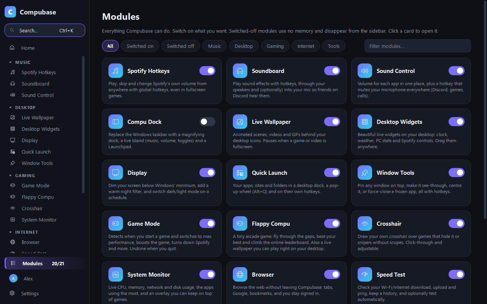

Windows, but yours.
Compubase adds the things Windows forgot: hotkeys for Spotify, a Game Mode that nearly vanishes while you play, live wallpapers, a magnifying dock and 20 more handy tools. One light app.

21 little superpowers.
Switch on the ones you want.
Only what you turn on runs. The rest uses nothing at all.
A Game Mode that gets out of the way
Launch a game and Compubase boosts it, switches to max performance, turns Spotify down, then goes ultra-light itself: its wallpaper, widgets and animations pause and it shrinks to about 10 MB. Hotkeys keep working.

Spotify, one key away
Play, skip and change Spotify's own volume without leaving your game.
while you game. Measured on our test PC, as Task Manager shows it.
Wallpapers that move
Live scenes, your own videos and GIFs, or free HD ones you download inside the app. Blurry? Enhance them with AI.

Find anything with Ctrl + K
Every module, setting and hotkey. Type a word and land right on it, highlighted.

Compu Dock
A magnifying dock and Launchpad that can replace the taskbar. Switch back any time.
One-key mic mute
Plus per-app volume and a soundboard that can play into Discord.
Crosshair & stats
A custom crosshair and an FPS-style stats box on top of your games.
Your music without the alt-tab.
Save your favourite albums and playlists to their own hotkeys, and they start on shuffle. Change Spotify's volume so your game and friends stay the same.
- Play / pause, skip, like, shuffle, jump 15 seconds
- A song pop-up when the track changes
- Works in fullscreen games

Easy from the first minute.
A short welcome tour switches on only what you care about. Everything else is one click away on the Modules page, and every module has a Reset button, so experimenting is safe.
- Pin favourite modules to the top of the sidebar
- Choose your own Home switches
- Updates itself with one click, keeping your settings

Pick a colour. This page changes too.
You're looking at Compu Violet. Compubase has eight themes, or any two colours you like.

Flappy Compu 🐤
A tiny game lives inside Compubase, and you can even play it on your desktop wallpaper. Warm up here, then post a real score from the app.
Click, tap or press Space
🏆 Leaderboard Loading
Web scores stay in your browser. Scores you set in the app go on the global board, with the nickname you choose. New birds unlock at 10, 20, 35, 50, 75 and 100 points.
Get Compubase and competeSame Windows. More you.
Windows on its own
- Alt-tab out of games to skip a song
- Tune your PC by hand for every game
- Static wallpaper
- Hunt through menus for settings
- No way to mute your mic everywhere
 With Compubase
With Compubase
- One hotkey, even in fullscreen
- Game Mode switches on by itself
- Live, music-reactive, even playable wallpapers
- Ctrl + K finds anything
- One key mutes your mic in every app
Get Compubase
One small setup file with everything inside. Free, no ads, no account.
Download Compubase SetupThanks! Open Compubase-Setup.exe when the download finishes.
Download
Click the button to get Compubase-Setup.exe.
Install
Open it and click Install. If Windows shows “Windows protected your PC”, click More info → Run anyway.
Make it yours
A quick tour switches on what you like. Later, find Compubase in the Start menu.
Good questions.
Is Compubase really free?
Yes. No ads, no in-app purchases, no “pro” version.
I had NexusHub. What happens?
NexusHub is now called Compubase. Your copy offers the update by itself (or install from this page); your settings, profiles and scores move over automatically, and the old version is removed.
What do I need?
Just Windows 10 or 11. The setup includes everything Compubase needs, so there's no Python or anything else to install.
Windows says “Windows protected your PC”.
Windows shows this for new apps that aren't downloaded by many people yet. Click More info, then Run anyway.
Will it slow down my games?
No. Game Mode boosts your game, and Compubase itself goes ultra-light while you play, giving its memory back to Windows (about 10 MB). Hotkeys keep working.
Will it break my taskbar?
No. The Compu Dock only hides the Windows taskbar. Switching it off, quitting, uninstalling, or even a crash brings the normal taskbar straight back.
How do updates work?
Compubase checks for a new version once a day and shows an Update now button on Home. It updates and restarts in about a minute.
How do I uninstall it?
Windows Settings → Apps → Installed apps → Compubase → Uninstall. You can choose to delete your settings too.
Does it work in games?
Yes. Hotkeys work in fullscreen games; the crosshair and stats overlay work in borderless and windowed modes. Check your game's rules before using overlays in ranked matches.
What does the leaderboard share?
Only the nickname you pick and your best score, and you can switch it off. Games played on this website stay on your device.